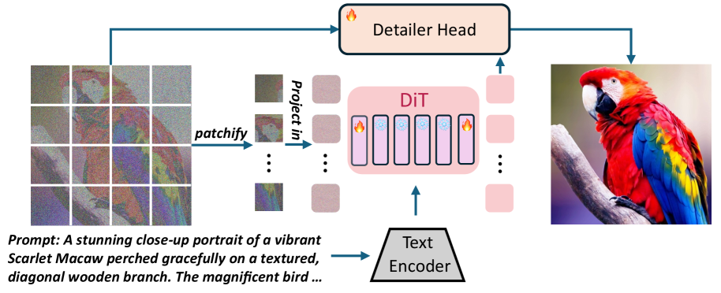
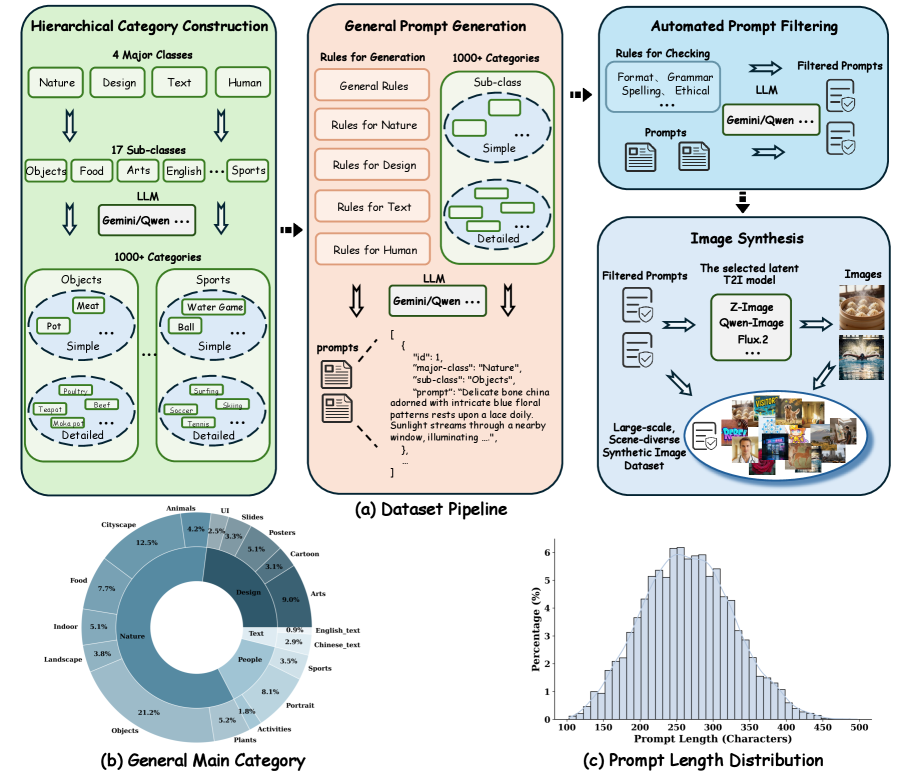
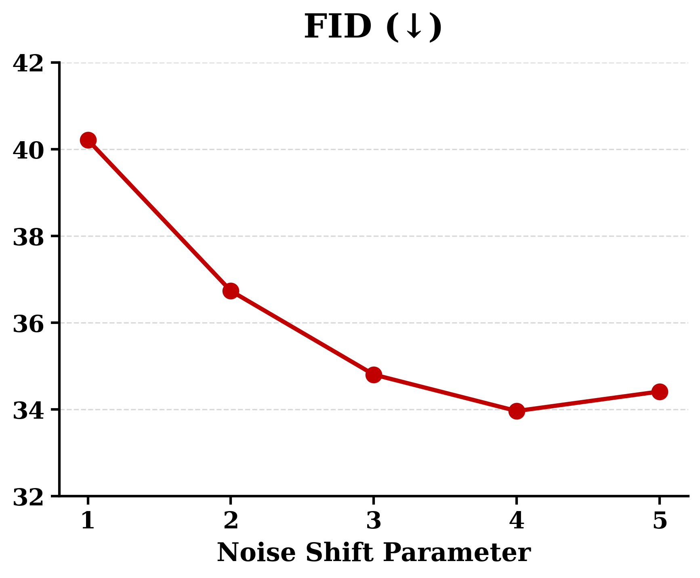
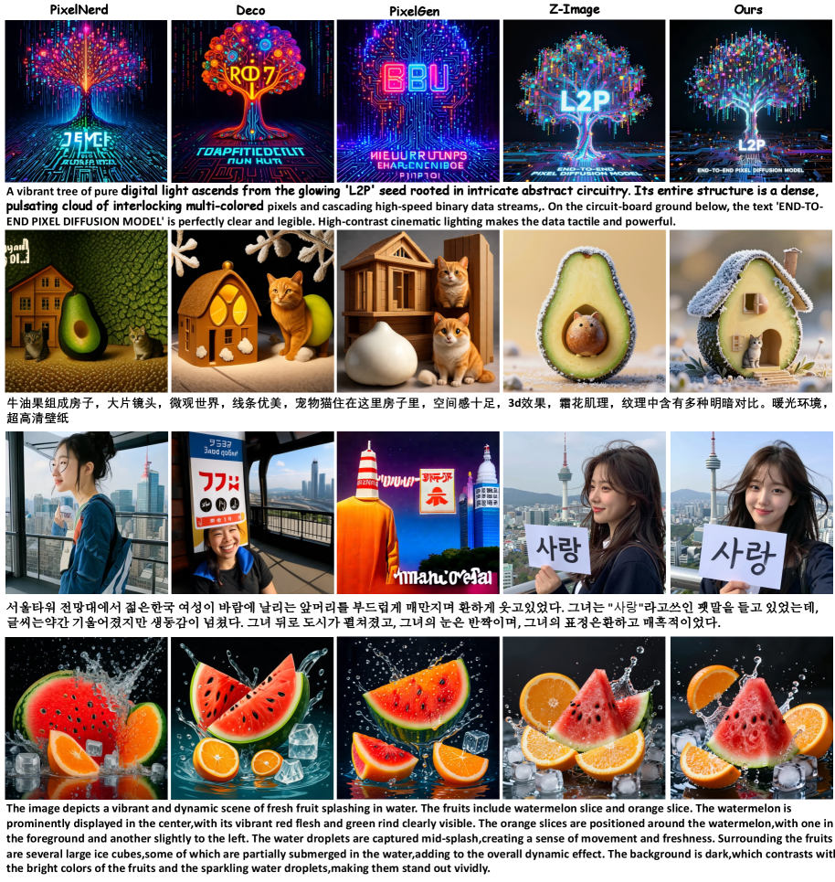
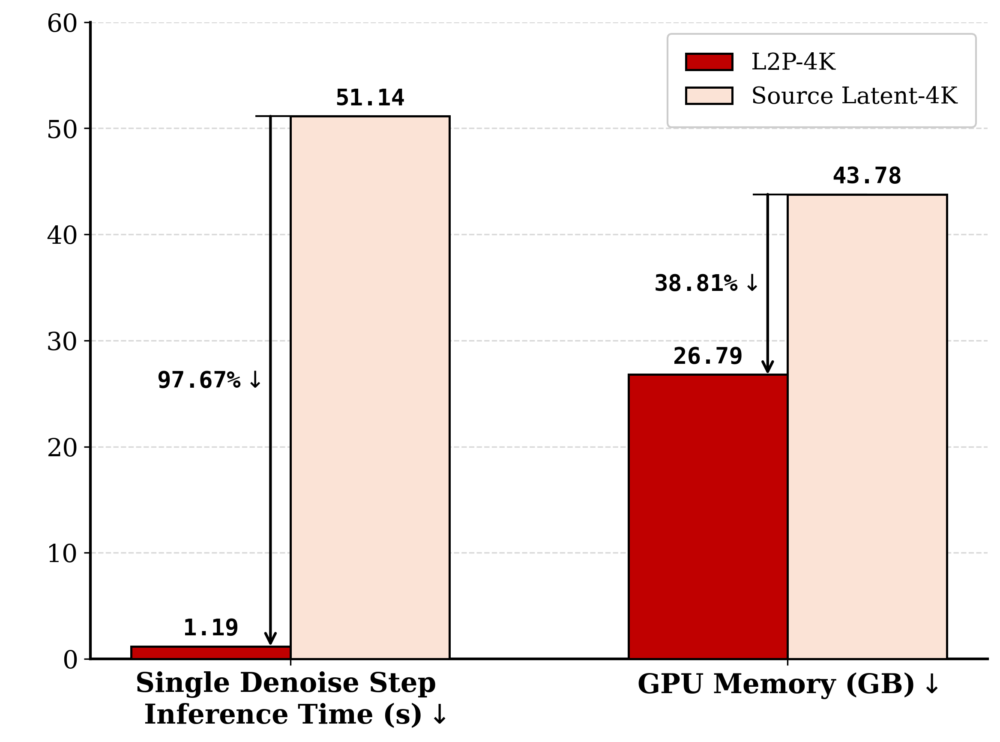
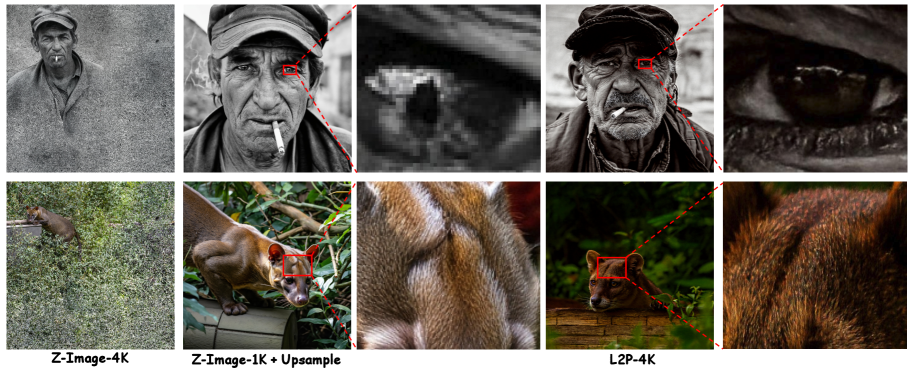
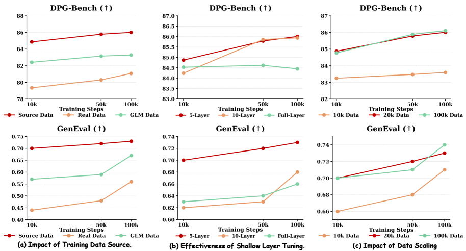

L2P:
把 LDM 的潜在知识"搬"到像素空间, 8 卡训出原生 4K 扩散

1. 出发点 (Motivation)
2025-2026 这一年, 像素扩散 (pixel diffusion) 又开始抬头 — PixNerd、DeCo、PixelDiT、DiP 一拨工作都在质疑 "VAE 压缩到 latent 再生成" 这条主流路线。理由很硬:
- VAE 的压缩天然丢高频。 8× 或 16× 下采样 + 4 通道 latent, 把砂砾、毛发、织纹这些频谱上的高频信号砍掉一大半, 再 decode 回来就是磨皮味儿。
- VAE decoder 的内存是 H×W 二次方。 想原生跑 4K (3840×2160) ? 单这一步就把 80GB H100 打爆。LDM 跑 4K 都要靠 tile + seam blending, 是工程苦活。
- VAE 不是 free lunch。 它本身是个有损 autoencoder, 训得不好就是瓶颈; 训得好也限制了上限。
所以"直接在像素空间上做扩散"应该是更干净的方案 — 没有 VAE 这一层, 输入输出都是 RGB, 数学上简单, 物理上对齐。但从零训像素扩散的代价是 SOTA LDM 的几倍: 几百张高端 GPU, 数十亿图文对, 才能勉强达到 LDM 的语义和构图水平。这就是 paper 想攻克的核心矛盾:
"Can we directly transfer the rich semantic priors embedded in pre-trained LDMs to a pixel-space diffusion model, thereby bypassing the astronomical costs of from-scratch training?"
答案叫 L2P (Latent-to-Pixel)。三个核心 idea (我的话):
- 大 patch 替代 VAE: 把 1024×1024 的像素图直接用 16×16 的 patch tokenize, 序列长度就跟 LDM 的 (1024/16)² = 4096 token 一样。这样 LDM 已经训好的 attention pattern 不用动 — 它"以为"自己还在处理 latent。
- 选择性冻结: 30 层 DiT 中, 中间大部分冻住 (已经懂语义和构图), 只让"输入投影层 + 首尾各 n 层 + 新加的 U-Net 解码头"可训。新东西只在 latent ↔ pixel 这一头一尾的转换上学。
- 合成数据训练: 训练图不是真实图, 而是用源 LDM (Z-Image-Turbo) 自己生成的 20k 张合成图。理由很妙 — 源 LDM 生成的图已经在它自己 modality (= 学完 VAE decode 之后的像素分布) 上, 数据流形已经被"平滑过了", 学生只要学"latent → pixel"这一小段映射, 收敛极快。
2. 方法 (Method) — 高中生友好 + 数学严谨
核心思想 (类比)
想象一个钢琴老师 (源 LDM) 已经会把"乐谱意图" (text prompt) → "MIDI 信号" (latent) 这一段弹得很溜, 但他从来不会"把 MIDI 信号物理转成钢琴键按下的力度模式" — 那一步交给了"MIDI 转钢琴动作"的 VAE decoder。现在你想要一个学生直接从乐谱意图弹出真琴, 跳过 MIDI 这层中间表示。
最笨的办法: 让学生从零学, 几年时间, 钢琴老师那些音乐知识全得重新学一遍。L2P 的办法: 把老师整套乐谱→MIDI 的功能搬过来当大部分骨架, 只让学生新学"MIDI → 实际琴键力度"这一小段映射。具体做法:
- 骨架不动: 老师的中间 28 层全冻住。
- 头尾微调: 第 1 层 (输入投影) + 前 n 层 + 后 n 层可训 — 把"接收钢琴键状态"和"输出钢琴键状态"这两端调成像素友好的格式。
- 额外加一个解码小模块: 一个轻量 U-Net "Detailer Head", 专门做"把 DiT 输出的 patch-level 特征还原成像素级细节"。
- 训练数据从哪来? 让老师自己弹 20000 段, 录下"乐谱→实际琴键力度"的配对 — 因为这些配对是老师亲手弹出来的, 已经在他可达的输出空间里, 学生学起来不会发散。
这就是为什么 8 卡能搞定: 你不是在训一个新钢琴家, 你只是给老钢琴家加了"绕过 MIDI 直出琴键"的一个适配器。
2.1 Flow Matching 基础 (Eq. 1–4)
L2P 用的是 flow matching 而不是 DDPM 的 ε-prediction, 因为源 LDM (Z-Image-Turbo) 本来就是 flow matching 训的。简单回顾:
前向加噪 (paper Eq. 1):
—— 翻译: 给干净图 $\mathbf{x}_0$ 按时间 $t$ 比例加噪声 $\boldsymbol{\epsilon}$ 得到带噪图 $\mathbf{x}_t$。$\bar{\alpha}_t$ 控制 "几分干净几分噪声"。
反向时间概率流 ODE (paper Eq. 2):
—— 翻译: 从 $t{=}T$ (纯噪声) 到 $t{=}0$ (干净图) 的连续轨迹。$\nabla_{\mathbf{x}}\log p_t$ 是 score。
Flow matching 训练目标 (paper Eq. 4):
—— 翻译: 让模型 $v_\theta$ 学习目标速度场 $u_t$。直观上, "速度"就是从噪声指向数据的方向向量。
具体到 Z-Image / L2P 用的是线性插值版 flow matching, 加噪和目标在代码里非常干净:
repo/diffsynth/diffusion/flow_match.py:L164-L174 — 前向 + 训练目标
def add_noise(self, original_samples, noise, timestep):
if isinstance(timestep, torch.Tensor):
timestep = timestep.cpu()
timestep_id = torch.argmin((self.timesteps - timestep).abs())
sigma = self.sigmas[timestep_id]
sample = (1 - sigma) * original_samples + sigma * noise
return sample
def training_target(self, sample, noise, timestep):
target = noise - sample
return target
这就是 flow matching 的核心两行: \(\mathbf{x}_t = (1-\sigma)\mathbf{x}_0 + \sigma \boldsymbol{\epsilon}\), 速度目标是 \(\boldsymbol{\epsilon} - \mathbf{x}_0\) — 即从干净指向噪声的方向。模型预测这个速度。
2.2 大 patch 替代 VAE
这是 L2P 最干净也最有冲击力的一步。
原来 LDM 的流程是: 像素图 \(\mathbf{I} \in \mathbb{R}^{3 \times 1024 \times 1024}\) → VAE 编码 → latent \(\mathbf{z} \in \mathbb{R}^{16 \times 64 \times 64}\) → 16-channel × (64/2)² = 16×32×32 token (DiT 内部还有 2×2 patchify) → DiT 处理 → reverse 回 latent → VAE 解码回像素。共有两次有损压缩 (VAE encode/decode), 还有 VAE 的训练成本和内存爆炸问题。
L2P 直接把 VAE 干掉, 改成: 像素图 → 16×16 patch 切割 → 序列长度 = \(1024/16 \times 1024/16 = 64 \times 64 = 4096\) token, 每个 token 是 \(16 \times 16 \times 3 = 768\) 维。这个序列长度跟原来 LDM 的 token 序列长度一致, 所以 DiT 不用改 attention 结构。代码里的 patch 切割是一行 reshape:
repo/diffsynth/models/z_image_dit_L2P.py:L608-L615 — 像素直接打 patch
### Process Image
C, F, H, W = image.size()
all_image_size.append((F, H, W))
F_tokens, H_tokens, W_tokens = F // pF, H // pH, W // pW
image = image.view(C, F_tokens, pF, H_tokens, pH, W_tokens, pW)
# "c f pf h ph w pw -> (f h w) (pf ph pw c)"
image = image.permute(1, 3, 5, 2, 4, 6, 0).reshape(F_tokens * H_tokens * W_tokens, pF * pH * pW * C)
然后用一个 Linear 把 768 维投到 DiT 的 hidden dim 3840:
repo/diffsynth/models/z_image_dit_L2P.py:L470 — 输入投影 (3 × 16 × 16 → 3840)
x_embedder = nn.Linear(f_patch_size * patch_size * patch_size * in_channels, dim, bias=True)
注意 in_channels=3 — 不再是 VAE latent 的 16 通道, 而是 RGB 的 3 通道。这个 Linear 层是 L2P 全新初始化训练的, 中间所有 30 层 DiT block 沿用 Z-Image-Turbo 的预训练权重。
2.3 选择性冻结 + Detailer Head
选择性冻结的逻辑很清楚 (paper §3.3 + Fig 9b 消融):
- 中间 DiT 层冻住: 这些层学的是"在 token 序列上做注意力 + FFN", 跟 token 是 latent 还是 pixel-patch 无关 — 全是 transformer 的纯计算逻辑。强行解冻, 反而会破坏源 LDM 的语义先验 (Fig 9b 的 "Full-Layer" 红线明显劣于"Default")。
- 首尾若干层 (paper 标记为 n): 输入端要学"怎么把 pixel patch 理解成 LDM 风格的 token", 输出端要学"怎么把 LDM 风格的 token 输出对齐到 pixel"。这两端要新学。
- Detailer Head: 一个 4 级下采样 + 4 级上采样的轻量 U-Net (paper 称 "Detailer Head", 代码里叫
MicroDiffusionModel)。它的输入是 原始带噪像素图 和 DiT 输出的特征图, 输出是预测的速度场。本质是个"特征图引导的去噪 + 上采样"模块, 用来补回 patch 化丢失的局部细节。

patchify(16×16) → DiT (中间冻结, 首尾可训) ⊕ Text Encoder → Detailer Head (轻量 U-Net) → 预测速度场。关键: 完全没有 VAE encoder/decoder。Detailer Head 的结构在代码里非常清晰 — 标准 U-Net, 但 bottleneck 处把 DiT 输出的特征图 (3840 通道) 拼到下采样到 H/16 的图像特征 (512 通道) 上, 再用 1×1 conv 压回 512:
repo/diffsynth/models/z_image_dit_L2P.py:L281-L350 — Detailer Head 主体结构
class MicroDiffusionModel(nn.Module):
def __init__(self, in_channels, si_t_hidden_size):
super().__init__()
self.enc1 = nn.Sequential(nn.Conv2d(in_channels, 64, kernel_size=3, padding=1), nn.SiLU())
self.pool1 = nn.MaxPool2d(2, stride=2)
# ... enc2/3/4 同构, 通道 64→128→256→512, 每级下采 2× ...
self.bottleneck = nn.Sequential(
nn.Conv2d(512 + si_t_hidden_size, 512, kernel_size=1), # ← 512 + 3840 = 4352 通道
nn.SiLU(),
)
# 4 级上采样 + skip connection, 通道 512→256→128→64→3
self.up4 = nn.Sequential(nn.Upsample(scale_factor=2, mode='nearest'),
nn.Conv2d(512, 512, kernel_size=3, padding=1))
self.dec4 = nn.Sequential(nn.Conv2d(512 + 512, 256, kernel_size=3, padding=1), nn.SiLU())
# ... up3/dec3/up2/dec2/up1/dec1 ...
self.out_conv = nn.Conv2d(64, in_channels, kernel_size=1)
forward 时, bottleneck 那一步把"语义" (DiT 特征) 注入到"高分辨率细节路径" (U-Net) 里, 这是 L2P 工作的关键交点:
repo/diffsynth/models/z_image_dit_L2P.py:L373-L381 — 把 DiT 特征灌进 U-Net bottleneck
def _enc_stage_4_and_bottleneck(p_in, c_in):
enc4_out = self.enc4(p_in) # [B, 512, H/8, W/8]
p4_out = self.pool4(enc4_out) # [B, 512, H/16, W/16]
if c_in.shape[-2:] != p4_out.shape[-2:]:
c_in = F.interpolate(c_in, size=p4_out.shape[-2:], mode='nearest')
bottleneck_input = torch.cat([p4_out, c_in], dim=1) # ← 拼接 DiT 特征
bottleneck_out = self.bottleneck(bottleneck_input)
return enc4_out, bottleneck_out
注意 F.interpolate 那个 fallback: 当 DiT 特征图分辨率跟 H/16 不匹配 (比如 4K 用 64×64 patch 时), 用 nearest 插值对齐。这就是 L2P 能在多种分辨率间共享同一个 head 的工程胶水。
2.4 合成数据训练 (Self-distillation 风味)
这是 L2P 第二个反直觉的设计。paper 用源 LDM 自己生成的 20000 张合成图作为唯一训练数据, 没有任何真实图像。Fig 9a 的消融非常说明问题:
- Source data (LDM 自生成): 最快收敛, 最高分数。
- Cross-model data (用 GLM-Image 等别的 T2I 生成): 中等。
- Real data (UltraHR-100K): 收敛慢, 分数低。
为什么真实图反而最差? Paper 的解释:
"By utilizing LDM-generated synthetic images as the sole training corpus, L2P fits an already smooth data manifold, enabling rapid convergence with zero real-data collection."
我的理解 (高中生版): 真实图像分布对源 LDM 来说是"陌生地形" — 中间冻住的 28 层不一定能完美映射真实图。而源 LDM 生成的图本来就在它自己的输出可达域里, 学生 (L2P) 只需要补上"latent → pixel 这一小段最后映射", 不需要解决"真实图也能被这套 DiT 表达"这个大问题。
这一招在 distillation 文献里有先例 (consistency distillation 也是让学生学老师的输出分布), 但 L2P 把它用得很彻底 — 整个训练集就是 20k 张合成图。

2.5 训练目标 (paper Eq. 5)
L2P 的 loss 是 flow matching 的标准 MSE:
—— 翻译: 给定干净像素图 $\mathbf{x}_0$ (合成图), 加噪到 $\mathbf{x}_t$, 让模型 $v_\theta$ 预测"从干净指向噪声的方向"$\boldsymbol{\epsilon} - \mathbf{x}_0$。是标准 flow matching, 没有特殊正则。
对照代码:
repo/diffsynth/diffusion/loss.py:L5-L31 — FlowMatchSFTLoss (训练时调用的 loss)
def FlowMatchSFTLoss(pipe: BasePipeline, **inputs):
max_timestep_boundary = int(inputs.get("max_timestep_boundary", 0.8) * len(pipe.scheduler.timesteps))
min_timestep_boundary = int(inputs.get("min_timestep_boundary", 0) * len(pipe.scheduler.timesteps))
timestep_id = torch.randint(-100, max_timestep_boundary, (1,)).clamp(min_timestep_boundary, max_timestep_boundary)
timestep = pipe.scheduler.timesteps[timestep_id].to(dtype=pipe.torch_dtype, device=pipe.device)
noise = torch.randn(inputs["input_latents"].shape, ..., dtype=inputs["input_latents"].dtype)
inputs["latents"] = pipe.scheduler.add_noise(inputs["input_latents"], noise, timestep)
training_target = pipe.scheduler.training_target(inputs["input_latents"], noise, timestep)
models = {name: getattr(pipe, name) for name in pipe.in_iteration_models}
noise_pred = pipe.model_fn(**models, **inputs, timestep=timestep)
loss = torch.nn.functional.mse_loss(noise_pred.float(), training_target.float())
return loss
注意 input_latents 这个参数名是个 遗留命名 — 它实际上是 像素值, 不是 latent。整个代码库是从 LDM 的 diffsynth fork 来的, 很多名字没改。这种命名残留可能误导读代码的人, paper 没提。
2.6 从 1K 到 4K: noise shift 才是关键
Paper §3.4 提到 4K 生成有两个 adapter:
- 动态 patch size: 1024×1024 用 16×16 patch (序列长 4096), 3840×2160 改成 64×64 patch (序列长 ~2000) — 维持序列长度可控。
- 更大的 noise shift: 这是更微妙也更重要的点。
什么是 noise shift? Flow matching 的 sigma schedule 是非线性插值:
—— 翻译: shift 参数 $s$ 控制"训练 / 推理时把更多算力花在哪段噪声水平上"。$s{=}1$ 是 uniform, $s{>}1$ 往大噪声端倾斜 (更多步数花在 0.8 以上)。
代码原型:
repo/diffsynth/diffusion/flow_match.py:L103-L118 — Z-Image 的 shift schedule
@staticmethod
def set_timesteps_z_image(num_inference_steps=100, denoising_strength=1.0, shift=None, target_timesteps=None):
sigma_min = 0.0
sigma_max = 1.0
shift = 3 if shift is None else shift # ← 1K 默认 shift=3
num_train_timesteps = 1000
sigma_start = sigma_min + (sigma_max - sigma_min) * denoising_strength
sigmas = torch.linspace(sigma_start, sigma_min, num_inference_steps + 1)[:-1]
sigmas = shift * sigmas / (1 + (shift - 1) * sigmas)
timesteps = sigmas * num_train_timesteps
Paper 解释 4K 需要更大 shift 的原因 (我的话): 4K 像素之间的局部相关性极强 — 相邻像素几乎一样, 标准 noise schedule 加到一定水平后图像信号还没被破坏 (相邻像素都加同等强度的独立噪声, 平均后能把彼此抵消很多, 局部低频信息保留得太好)。结果模型在小噪声端没看到充分困难的样本, 学到的是"在干净图上做局部细化", 而不是"从噪声中长出全局结构"。
把 shift 调大到 ~5, 训练和采样都花更多步数在大噪声水平 (sigma 接近 1), 强迫模型学到"从纯噪声生成全局结构"。Fig 12 是 4K 上不同 shift 的 FID 曲线, U 形, 最优 shift 落在 5 附近。

2.7 代码对照: forward 全流程
用代码再走一遍 forward 流程, 算是把上面所有部件串起来:
repo/diffsynth/models/z_image_dit_L2P.py:L660-L811 — ZImageDiT.forward (节选)
def forward(self, x, t, cap_feats, patch_size=16, f_patch_size=1, ...):
# 1. 时间嵌入
t = t * self.t_scale
t = self.t_embedder(t)
adaln_input = t
# 2. 像素 patchify + 线性投影到 DiT hidden dim
(x_patches_flat_list, cap_feats, x_size, x_pos_ids, ...) = \
self.patchify_and_embed(x, cap_feats, patch_size, f_patch_size)
x_embed = torch.cat(x_patches_flat_list, dim=0)
x_embed = self.all_x_embedder[f"{patch_size}-{f_patch_size}"](x_embed) # ← 3*16*16 → 3840
# 3. Noise refiner (前 n 层 — paper 说的"first n layers", 可训)
for layer in self.noise_refiner:
x_embed = layer(x_embed, attn_mask, freqs_cis, adaln_input)
# 4. Caption embedding + context refiner (text token 也走 n 层 refiner)
cap_feats = self.cap_embedder(cap_feats)
for layer in self.context_refiner:
cap_feats = layer(cap_feats, cap_attn_mask, cap_freqs_cis)
# 5. 图像 + caption 拼接, 喂主干 DiT (30 层, 中间冻结)
unified = [torch.cat([x_embed[i][:x_len], cap_feats[i][:cap_len]]) for i in range(bsz)]
unified = pad_sequence(unified, batch_first=True, padding_value=0.0)
for layer in self.layers: # ← 30 层 DiT, paper 说大部分冻住
unified = layer(unified, unified_attn_mask, unified_freqs_cis, adaln_input)
# 6. 抽取图像 token, reshape 回 2D 特征图
img_token_len = x_item_seqlens[0]
img_features = unified[:, :img_token_len, :]
F_ori, H_ori, W_ori = x_size[0]
feat_H, feat_W = H_ori // patch_size, W_ori // patch_size
feat_map = img_features.view(bsz, feat_H, feat_W, self.dim).permute(0, 3, 1, 2)
# ← shape: [B, 3840, H/16, W/16] 这是 DiT 输出的"语义条件"
# 7. Detailer Head: 输入是 (原噪声像素图, DiT 特征图), 输出是预测速度
noisy_images = torch.stack(x, dim=0).squeeze(2) # [B, 3, H, W]
decoded_batch = self.local_decoder(noisy_images, feat_map, ...) # ← MicroDiffusionModel
return list(decoded_batch.unsqueeze(2).unbind(0)), {}
三个值得圈点的细节:
- noise_refiner / context_refiner 各 2 层 (代码默认
n_refiner_layers=2), 处理 image 和 text 各自的 token (相当于 paper 说的 "first n DiT blocks"), 然后才拼到一起进主干 30 层。 - 主干 30 层注释里那段被砍掉的 final_layer (L775-L777) 是原 Z-Image 的输出投影, L2P 把它整个换成了 Detailer Head。这是原生 LDM → L2P 改造的一个清晰证据。
- Detailer Head 同时吃原噪声图和 DiT 特征 — 不是 DiT 输出 patch 再 unpatchify, 而是"原始像素图 + 语义条件特征"经过一个独立 U-Net。这跟你直觉的"DiT 输出 → 上采样还原"完全不同, 也是 L2P 能保留高频的关键。
3. 结论 (Key Findings)
3.1 1024×1024 主结果
Table 1 (DPG-Bench + GenEval, paper 的主表):
| Model | DPG-Bench Global | DPG-Bench Avg | GenEval Overall |
|---|---|---|---|
| Z-Image-Turbo (源 LDM) | 91.29 | 84.86 | 0.82 |
| L2P (本文) | 92.02 | 86.00 | 0.76 |
| PixelGen | 85.61 | 80.01 | 0.79 |
| Deco | 84.91 | 81.25 | 0.86 |
| PixNerd | 87.16 | 82.65 | 0.73 |
核心数字:
- DPG-Bench Avg 86.00 反超源 LDM (84.86) — 这是 paper 最敢吹的一条, 说明大 patch + 选择性冻结+ Detailer Head 不仅没损失语义, 反而略有提升 (paper 推测是 Detailer Head 的高频细节恢复让 DPG 的"description"维度评分上升)。
- GenEval 0.76 保留 93.6% 源 LDM 性能 (0.82)。这一项掉了, 主要是 object counting / position 这些更挑剔语义的指标 — 选择性冻结确实没完全保住所有能力, 但 6.4% 的 gap 是可接受的迁移损失。
- 对比同类 pixel-space 模型 (PixelGen / Deco / PixNerd), L2P 全面领先 — paper 称 SOTA pixel diffusion on DPG-Bench。

3.2 4K 原生生成
Table 2 (4K, paper §4.3):
| Method | FID ↓ | FID_patch ↓ | IS ↑ | CLIP ↑ | FG-CLIP ↑ |
|---|---|---|---|---|---|
| L2P-4K (本文) | 33.46 | 21.77 | 12.28 | 31.88 | 28.22 |
| Pixart-σ | 35.60 | 23.63 | 12.23 | 31.76 | 28.74 |
| SANA | 37.26 | 28.94 | 12.05 | 31.79 | 29.31 |
| I-Max | 37.12 | 34.42 | 11.78 | 31.53 | 27.90 |
| HiFlow | 38.54 | 22.74 | 10.62 | 31.49 | 27.84 |


3.3 三组关键消融 (paper Fig 9)

三个核心 takeaways:
- "源 LDM 自生成数据" 比真实数据收敛快、上限高 — 反直觉, 但非常可解释 (匹配源模型可达流形)。
- 选择性冻结至关重要 — 不是"为了省显存", 而是"为了不破坏源 LDM 的语义先验"。Full-Layer 解冻在 GenEval 上明显劣于选择性冻结。
- 20k 张图就够了 — 这是 LDM 标准训练集 (LAION-Aesthetic 几亿张) 的 0.001%。说明 L2P 不是在"重新学语义", 只是在"学 latent ↔ pixel 的小段映射"。
4. 实现细节 (Implementation Notes)
代码里关键、但论文未充分说明 / 容易踩坑的细节:
- 训练入口
--trainable_models "dit"与 paper 的"选择性冻结"措辞不完全一致: paper §3.3 说只训首尾若干层 + Detailer Head, 但开源train_run.sh:L21的--trainable_models "dit"会让整个 dit module (含 30 层 + refiner + detailer head) 都requires_grad=True。diffusion/training_module.py:L151-L152的freeze_except只控制顶层模块名级别的冻结, 没看到层级 mask。推测: 开源版本是从Z-Image-Pixel-Init这个已经预转换好的 checkpoint 出发, full-finetune 整个 dit 也能跑通 (因为初始化已经很接近), 而 paper 的层级冻结消融可能是另外 patch 加的, 没合入主分支。这是个明显的 paper-vs-code gap, 想严格复现 Fig 9b 的人需要自己加 hook。 - 命名遗留:
input_latents实际是像素值:loss.py:L22-L24里的变量名inputs["input_latents"]字面意思是 latent, 实际就是 3 通道 RGB 像素。整个代码库 fork 自 LDM 的 diffsynth, 很多名字 (包含latents) 都没改, 不读懂的话以为还在 latent space。Paper 没提这个 fork 历史。 - 4K 用的不是同一个 patch embedder:
z_image_dit_L2P.py:L467-L476用 ModuleDict 按 patch size 分别建nn.Linear:"16-1"给 1K,"64-1"给 4K (后者权重 独立训练)。也就是说 paper 标题的"L2P"严格说是两个相关但分别训练的模型。开源 release 里 1K 版本可下载 (HuggingFacezhen-nan/L2P), 4K 版本 roadmap 写"WIP 未发布"。 - 训练超参 (来自
train_run.sh+ paper Table 3):--learning_rate 5e-5AdamW, weight_decay 默认 0.01--max_pixels 1048576= 1024×1024,--dataset_repeat 1--gradient_accumulation_steps 1, 单卡 batch=1, 8 卡 batch=8--use_gradient_checkpointing— DiT 30 层 + Detailer Head, 单 H100 80GB 也是擦边, gradient checkpointing 是必须的--save_steps 5000,--num_epochs 100000— 实际 paper 说 20k 步即饱和 (Fig 9c)--remove_prefix_in_ckpt "pipe.dit."— 存权重时去掉前缀, 方便后续合并到原始 Z-Image 格式
- 预处理: 像素值范围是 [-1, 1] 不是 [0, 1]:
z_image_L2P.py:L145-L159的pixel_output_to_image默认min_value=-1, max_value=1。这是 Z-Image-Turbo 的原始约定, L2P 继承。如果你想拿这个模型做 image-to-image, 输入也得归一化到 [-1, 1]。 - Text encoder 在训练时可以 offload 到 CPU:
train_L2P.py:L43-L55提供--offload_text_encoder, 推荐给 24GB 卡。这显示作者也知道 6B 模型在消费级硬件训练的痛点。 - RoPE 配置:
axes_dims=(32, 48, 48),axes_lens=(1024, 512, 512)— 第一维是 frame (这是从视频模型抄来的), 后两维是 H/W。1K 输入图 token 数 4096, 用得到 512 这个范围; 4K 用 64×64 patch, token 数也是 4096, 共用 RoPE 频率表。 - 训练目标是 noise - sample 不是 sample - noise:
flow_match.py:L172-L174return noise - sample— 模型学的是"从干净指向噪声"的方向 (sigma 增加方向)。这跟 SD 3 / Flux 的约定一致, 但跟某些早期 flow matching 论文相反 (后者用 sample - noise)。复现时不要弄反。
关键 loss snippet (再贴一次 + 完整调用链):
repo/examples/z_image/model_training/train_L2P.py:L62-L70 — Loss 选择
self.task_to_loss = {
"sft": lambda pipe, inputs_shared, inputs_posi, inputs_nega: FlowMatchSFTLoss(pipe, **inputs_shared, **inputs_posi),
"sft:train": lambda pipe, inputs_shared, inputs_posi, inputs_nega: FlowMatchSFTLoss(pipe, **inputs_shared, **inputs_posi),
"direct_distill": lambda pipe, inputs_shared, inputs_posi, inputs_nega: DirectDistillLoss(pipe, **inputs_shared, **inputs_posi),
...
}
默认 task="sft" 走 FlowMatchSFTLoss; 另一个分支 DirectDistillLoss 是个未公开的实验功能 — 让学生直接匹配老师走完所有 step 后的 latents, 跟主 paper 没强关系, 估计是作者另一个项目。
5. 批判性总结 (Critical Assessment)
优点
- 三个核心 idea 各自都言之有理且互相支撑: 大 patch 替 VAE (绕开二次方内存) + 选择性冻结 (保留语义先验) + 合成数据 (匹配源模型可达流形)。任何一个抽掉, 故事都不成立 — 不是 ad-hoc 拼凑的方法 stack。
- 8 卡 + 20k 图的代价真的低到让很多学术组能复现 — 跟 pixel diffusion 从零训需要数百卡的代价相比, 这是数量级的差别。开源 1K 版本 + HF 上的数据集进一步降低门槛。
- "4K 单步 1.19s vs LDM 51.14s" 这个数字非常直接 — 不是 cherry-pick 的某个 prompt, 是 single denoise step latency 这种 hardware-level 测量, 难以包装。VAE 4K decode 内存爆炸是确定性事实, L2P 拆掉 VAE 是确定性收益。
- Fig 9b 的消融 (选择性冻结 vs full-layer) 给出了非常有说服力的反例 — 全部解冻反而劣于选择性冻结, 把"为什么要冻结"从"省显存"提升到"保护知识"。这是 paper 最有教育意义的一张图。
- 第 3 行韩语 prompt 那个例子 (zero-shot 渲染训练集没有的语言) 是知识保留的强证据 — 不是 prompt 工程的 trick, 是源 LDM 的多语言能力完全跟着主干 DiT 一起冻结迁移过来了。
不足 / 疑点
- 开源训练脚本与论文方法不一致: 如 §4 第一条所述,
--trainable_models "dit"解冻整个 dit, 不是 paper 描述的层级 mask。这意味着开源版本不是 paper 实验里跑出 Table 1/Fig 9 的那个版本, 而是一个更宽松的微调变体。想复现 Fig 9b 的人需要自己加层级冻结的 hook。这是个不大不小的方法学瑕疵。 - GenEval 掉了 6.4% 不是免费: paper TL;DR 强调"DPG-Bench 反超", 但 GenEval (object counting/position 等组合性更强的任务) 掉了将近一个 quartile。这暗示选择性冻结有损失 — 不是所有源 LDM 的能力都迁移过来了。Paper 没单独分析掉的是哪些维度, 这是个透明性问题。
- "4K 原生" 跟同样原生 4K 的工作 (Pixart-σ, SANA) 的 FID 差距只有 ~2 点。考虑到 FID 这个指标对训练数据分布敏感, 而 L2P 的 baseline 不一定用同样的真实图 reference set, 这个差距不一定是方法差距, 也可能是评测协议差距。Paper 没在附录里给充分的协议细节。
- 合成数据训练的 upper-bound 问题被作者自己承认 (Limitation 1): L2P 的天花板就是源 LDM 的天花板。如果源 LDM 在某个 domain 弱 (比如 fine-grained 文本渲染), L2P 一样弱。这意味着 L2P 不是通向"超过 LDM 的 pixel SOTA"的路径, 而是"用更少代价拿到 LDM 同等水平的 pixel 模型"的路径。这两件事价值不一样。
- 4K 版本未开源, roadmap 标 WIP。所有 Fig 4 / Table 2 的 4K 结果都靠 paper 数字背书, 暂时无法独立验证。
- Detailer Head 引入的额外参数 (U-Net 4 级, 几百 M) 没有完整的参数量 / FLOPs 报告。"训练代价低" 这个 claim 是模糊的 — 是相对 from-scratch 低, 还是相对源 LDM 微调低, paper 没给精确数字。
- 命名残留
input_latents: 代码可读性问题, 反映出 paper 团队对开源 release 的打磨不到位 — 一个简单的 rename pass 能避免读者困惑。
适用 vs 不适用
- ✅ 适用: 学术组 / 中小公司想拿到一个高质量像素扩散模型, 但没有 from-scratch 训练的算力; 需要原生 4K/8K 生成且不想被 VAE decoder 内存卡住的场景; 想做 pixel-level loss (perceptual / physics-based) 但被 LDM latent 阻挡的研究。
- ❌ 不适用: 想要"超过现有 LDM SOTA"的生成质量 — L2P 上限就是源 LDM; 想要严格复现 paper Fig 9b 的人 (开源版本不带选择性冻结); 工业生产中需要在真实图分布上做下游 fine-tune (源 LDM 自生成图可能跟生产数据分布有 gap)。
进一步阅读
- 同期 pixel diffusion 对照: PixNerd (decoupled global+local), DeCo (decoupled), PixelDiT, DiP — 都是 from-scratch 训练, 跟 L2P 的 transfer 路线形成鲜明对比。
- 源 LDM: Z-Image-Turbo (Tongyi-MAI) — L2P 的全部 DiT 主干来自这里, 想理解 L2P 必读 Z-Image 的 architecture 文档。
- 大 patch 思路的先例: SiT / DiT 原始 paper 已经讨论过 patch size 与图像质量的 trade-off; FLUX 用更大的 patch size 配 latent。L2P 把它推到 pixel 上是合理延伸。
- 合成数据训练扩散: Synthesizer (Yu 2024), Consistency Distillation 系列 — 类似的"用模型自生成数据训学生"思路在 distillation 文献早有先例, L2P 是把它用到 pipeline 改造而非 step compression。
- 4K 生成的另一条路: HiFlow / I-Max — 主要思路是先生成低分辨率再 super-res 或 tile-merge, 跟 L2P 的"原生 4K" 是不同 trade-off (前者推理更慢但训练更便宜)。
讨论 / Comments
评论托管在本仓库的 GitHub Discussions, 需 GitHub 账号。